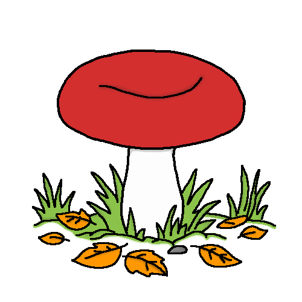

Відомі пластинчасті гриби
Цей клас грибів має на нижній стороні капелюшка тонкі пластинки, що розходяться від ніжки до країв. Серед них є як цінні їстівні види, так і ті, що потребують обережності при зборі.

Лисичка справжня
Яскраво-жовта або помаранчева лісова красуня. Має цікаву хвилясту форму. Величезний плюс лисичок полягає в тому, що вони містять особливу речовину, тому майже ніколи не бувають червивими.
Опеньок осінній
Ці гриби ростуть великими "сімейками" на старих пнях та повалених деревах. Мають тоненькі ніжки, коричневі капелюшки та ніжне кільце. Є одними з найкращих грибів для засолювання та маринування.

Сироїжка
Дуже поширений і крихкий гриб, що вражає лісових мандрівників розмаїттям кольорів: від насичених червоних і зелених до жовтих та фіолетових. Збирати їх треба обережно, щоб не розкришити в кошику.

Печериця лісова
Близька родичка магазинних шампіньйонів, але має більш виражений грибний аромат. Вирізняється лускатим капелюшком, пластинками, які з віком стають шоколадного кольору, та кільцем на ніжці.